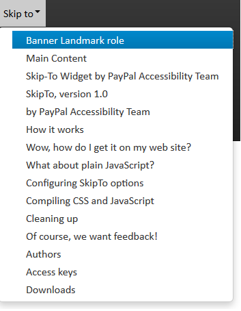

Accessible Web Components
Nawaz & Srini, PayPal / @PayPalInclusive
About Speakers
Srinivasu – An accessibility evangelist, technologist, believes in inclusion
Nawaz – An accessibility evangelist, geek, loves social innovation
PayPal Accessibility Team
- Team with thought leaders in the industry
- Committed to help our product teams
- Come up with solutions not only for the company but also for the community
PayPal Accessibility Initiatives
We needed it, so we innovated it.

Necessity is the Mother of Invention
The state of today's web
Everyone wants
- To see web as an application
- Richness and responsiveness
- On multiple devices (mobile, tablets etc.,)
Problem: InAccessible Libraries
With too many things in focus like speed, adaptive and responsive, Accessibility takes a backseat before it is released to the public
Inaccessible components are repeatedly incorporated into every new project which leaves behind many inaccessible websites
Innovate-Adapt-Evolve
A walk-through of our Innovation Journey:
- Bootstrap Plug-in
- SkipTo Plug-in
- amCharts Plug-in
Skip Navigation Links
- Are a way to ByBass Blocks of content (WCAG 2.4)
- Without using this link
- Keyboard user needs to tab through approximately 40 links to reach the main story
- Screen reader user have to listen to 200 words
- Screen magnifier user must search around for the location of the main body
- Has been for a long time and Accessible websites use it
SkipTo Plugin
- Replacement for your old classic “Skipnav” link
- Scans the Whole page for Headings, Landmark roles
- Displays as a nice Menu Button
- Screen Readers announce it as “SkipTo menu Collapsed”
SkipTo Plugin - How to operate
- Spacebar or Enter Key to activate
- Down/up arrows to navigate
- Esc to close the Menu
- Access key “0” to go back to SkipTo
SkipTo Plugin - How to implement
Just add the JavaScript plugin to your HTML file
SkipTo Plugin - How to Configure
Also available as Wordpress plugin from wordpress repository and as Drupal plugin from Drupal repository
Bootstrap Library
Famous because of Sleekness, Ease of use and Responsiveness

Bootstrap Plugin
Pros
- Makes many of the components of Bootstrap library accessible for keyboard and screen reader users
- Experiment with Bootstrap without having to modify the original code
- Independent of Bootstrap's release timeliness
- Avoid other people having to hack Bootstrap code if they just want to get accessibility features
Cons
- Another JavaScript file and CSS files need to be loaded on the page (but wait! you can Lazy Load)
Bootstrap Plugin (TabPanel) - What it does?
var $tablist = $('.nav-tabs')
, $lis = $tablist.children('li')
, $tabs = $tablist.find('[data-toggle="tab"], [data-toggle="pill"]')
$tablist.attr('role', 'tablist')
$lis.attr('role', 'presentation')
$tabs.attr('role', 'tab')
$tabs.each(function( index ) {
var tabpanel = $($(this).attr('href'))
, tab = $(this)
, tabid = tab.attr('id') || 'ui-tab'+ Math.floor((Math.random()*100)+1)
tab.attr('id', tabid)
if(tab.parent().hasClass('active')){
tab.attr( { 'tabIndex' : '0', 'aria-expanded' : 'true', 'aria-selected' : 'true', 'aria-controls': tab.attr('href').substr(1) } )
tabpanel.attr({ 'role' : 'tabpanel', 'tabIndex' : '0', 'aria-hidden' : 'false', 'aria-labelledby':tabid })
}else{
tab.attr( { 'tabIndex' : '-1', 'aria-expanded' : 'false', 'aria-selected' : 'false', 'aria-controls': tab.attr('href').substr(1) } )
tabpanel.attr( { 'role' : 'tabpanel', 'tabIndex' : '-1', 'aria-hidden' : 'true', 'aria-labelledby':tabid } )
}
})
$.fn.tab.Constructor.prototype.keydown = function (e) {
var $this = $(this)
, $items
, $ul = $this.closest('ul[role=tablist] ')
, index
, k = e.which || e.keyCode
$this = $(this)
if (!/(37|38|39|40)/.test(k)) return
$items = $ul.find('[role=tab]:visible')
index = $items.index($items.filter(':focus'))
if (k == 38 || k == 37) index-- // up & left
if (k == 39 || k == 40) index++ // down & right
if(index < 0) index = $items.length -1
if(index == $items.length) index = 0
var nextTab = $items.eq(index)
if(nextTab.attr('role') ==='tab'){
nextTab.tab('show') //Comment this line for dynamically loaded tabPabels, to save Ajax requests on arrow key navigation
.focus()
}
// nextTab.focus()
e.preventDefault()
e.stopPropagation()
}
$(document).on('keydown.tab.data-api','[data-toggle="tab"], [data-toggle="pill"]' , $.fn.tab.Constructor.prototype.keydown)
var tabactivate = $.fn.tab.Constructor.prototype.activate;
$.fn.tab.Constructor.prototype.activate = function (element, container, callback) {
var $active = container.find('> .active')
$active.find('[data-toggle=tab]').attr({ 'tabIndex' : '-1','aria-selected' : false,'aria-expanded' : false })
$active.filter('.tab-pane').attr({ 'aria-hidden' : true,'tabIndex' : '-1' })
tabactivate.apply(this, arguments)
element.addClass('active')
element.find('[data-toggle=tab]').attr({ 'tabIndex' : '0','aria-selected' : true,'aria-expanded' : true })
element.filter('.tab-pane').attr({ 'aria-hidden' : false,'tabIndex' : '0' })
}
Bootstrap Plugin - Alert
- Adds role of Alert to Alert, Warning, and Success Bootstrap messages
- Increases the color contrast as the foreground to background color contrast ratio for the message was too low
- Adds instructions in message dialog so that the developer using the alert knows to manage keyboard focus on alert dismissal
Bootstrap Plugin - Tooltip/PopOver
- Add role of Tooltip to tooltip div
- Generates a random id, assign it to the tooltip div, and reference it from the Tooltip element with the ARIA attribute “aria-describedby”
- Removes aria-describedby when the tooltip is hidden
Bootstrap Plug-in - Modal Dialog
- Adds role of Document to content div inside dialog so that NVDA can force document mode and read contents inside Dialog.
- When the Modal is closed, returns the focus to the element which opened the dialog
- Changes the focus outline of Close button to visible
Dropdown
- Adds aria-haspopup and and aria-expanded attributes to dropdown toggle link
- Dynamically changes aria-expanded when the dropdown closes or opens
- Focuses to first item on activating dropdown
- Adds ability to open dropdown with spacebar
- Close dropdown when tabbing out from dropdown
- Changes the focus outline of dropdown to visible
Collapse
- Adds tab role, aria-selected, aria-expanded, aria-controls, and tabIndex for collapse tab
- Adds ARIA roles of tabPanel, tabIndex, aria-hidden, and aria-labelledBy for collapsible panel
- Adds role of tabList and aria-multiselectable for collapse container div
- Dynamically flips tabIndex, aria-selected, and aria-expanded for tab when it is activated and add aria-hidden to hide the previously visible collapse tabpanel
- Closes dropdown when tabbing out from dropdown
- Adds keydown event listener for the collapse component to work with keyboard
Carousel
- Prevents automatic cycling of the carousel.
- Prevents wrapping to first item on Next button navigation or wrapping to last item on Previous button navigation
- Adds role of listbox for carousel div
- Adds ARIA role of option, aria-selected, and tabIndex for individual carousel items
- Adds keydown event listener for the carousel to work with keyboard
Carousel (Contd.)
- Dynamically changes tabIndex and aria-selected property of active and inactive tabs
- Removes display:none and hide (offscreen) of the inactive carousel items so that screen readers can count the total number of carousel items.
Bootstrap Plugin - How to implement
- Download and include Bootstrap.js from getbootstrap.com.
- Download and include the bootstrap accessibility plugin js.
- Download and include the bootstrap accessibility plugin css to override css styles.
- Optional: Lazily load the JavaScript plugin after the page is loaded.
GITHUB Repo : https://github.com/paypal/bootstrap-accessibility-plugin/
Demo :http://paypal.github.io/bootstrap-accessibility-plugin/demo.html
Reasons for amCharts Accessibility Plugin
- To Solve the problem of Lack of accessible charts for blind and keyboard users
Usual ways to make Chart Accessible
- Chart data duplicated in a table and hidden off-screen
- Alt text
- LongDesc Attribute
Problems with usual ways
- Data is duplicated as in Hidden table
- Too much text to describe the Chart
- Only Basic textual information available to Screen reader users
- Lot of maintenance
amCharts
- Made of SVG
- Interactive
- Dynamic Data
amCharts accessibility Plugin
For keyboard users
- Can navigate with Left and Right arrow keys
- Cursor tooltip is shown when the arrow keys are pressed
- Tab key to navigate within chart, left and right sliders
- Applies aria-label, aria-valuemin, aria-valuemax, aria-valuetext and aria-valuenow for left and right sliders
amCharts accessibility Plugin
For Screen Readers
- Applies role of Application to the chart
- Creates a hidden status Div to announce the Tooltips displayed
- Applies aria-label, aria-valuemin, aria-valuemax, aria-valuetext and aria-valuenow for left and right sliders
amCharts accessibility Plugin - How to implement